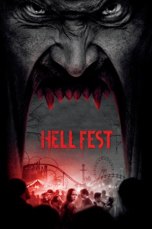

#11815 Hell Fest
 
 IMDB-Wertung: 5.5 / 10
IMDB-Wertung: 5.5 / 10  Tomatometer: 42
Tomatometer: 42  Metascore: 26
Metascore: 26 
Ein maskierter Serienkiller macht aus dem Horror-Freizeitpark "Hell Fest" seine eigene persönliche Spielwiese, indem er eine Freundesclique attackiert, während die übrigen Besucher glauben, dass alles Teil der Show ist.
Jahr: 2018
Dauer: 89 Minuten
FSK: 16
Land: USA Studio: CBS FilmsTonspuren: DTS - ,
Untertitel: Deutsch,
Auflösung: 1080p (1920x1040) Größe: 4597 MB
Genre: Horror
Regisseur: Gregory Plotkin
Drehbuch: Seth M. Sherwood, Blair Butler, William Penick, Christopher Sey, Stephen Susco
Soundtrack: Bear McCreary
Darsteller:
- Stephen Conroy als The Other
- Amy Forsyth als Natalie
 Bex Taylor-Klaus als Taylor
Bex Taylor-Klaus als Taylor- Reign Edwards als Brooke
- Christian James als Quinn
 Matt Mercurio als Asher
Matt Mercurio als Asher- Roby Attal als Gavin
- George Howard Adams als Gate Guard
- Courtney Dietz als Britney
- Markus Silbiger als Bored Carny Kid
 Michael Tourek als Security Guard
Michael Tourek als Security Guard Tony Todd als The Barker
Tony Todd als The Barker- Aaron Gillespie als Stagehand
- Cecil Elmore Jr. als Cop
- Elle Graham als Little Girl
- Athena Akers als Chorus Girl (uncredited)
 John Jacob Anderson als Killer Clown (uncredited)
John Jacob Anderson als Killer Clown (uncredited)- Ashley Brasel als Hellfest Halloween Park Goer (uncredited)
- Kevin Galbraith als Map Guy (uncredited)
- Joshua Johnson als Park Goer (uncredited)
- Shaun McMillan als Hellfest Halloween Park Goer (uncredited)
- Alicia Rosato als Britney's Friend (uncredited)
- Milton Saul als Hell Fest Halloween Park Goer / Event Staff (uncredited)
 Brooke Jaye Taylor als Cop (uncredited)
Brooke Jaye Taylor als Cop (uncredited)- Jessica Walker als Stage Hand (uncredited)
- Cynthea Mercado als Jodi
- Rio Ahn als EMT (uncredited)
- Bobby Akers als Hell Fest Attendee (uncredited)
- Kimberly Battista als Demonic Nun (uncredited)
- Leon Croom als Beer Worker (uncredited)
- Jacob bd Holmes als Corbie / Security Guard / Park Goer (uncredited)
- John James Laws als Ride Attendant (uncredited)
- Stephen M. Phillips als Wandering Monster (uncredited)
 Mason Pike als Shaved Ice Vendor (uncredited)
Mason Pike als Shaved Ice Vendor (uncredited)- Quandae Stewart als Halloween Park Goer / Booth Worker (uncredited)
- Ashley Uecker als Park Attendee (uncredited)
- Benjamin Weaver als Hellfest Halloween Park Goer (uncredited)
Datei: X:\2018(G-M)\Hell Fest (2018, FSK16, 1920x1040).mkv seit 22.09.2019
Festplatte: HD 2018(G-Z)-2019(A-Z)
 Es gibt insgesamt 138 Filme in der Gruppe '2018(G-M)'
Es gibt insgesamt 138 Filme in der Gruppe '2018(G-M)'